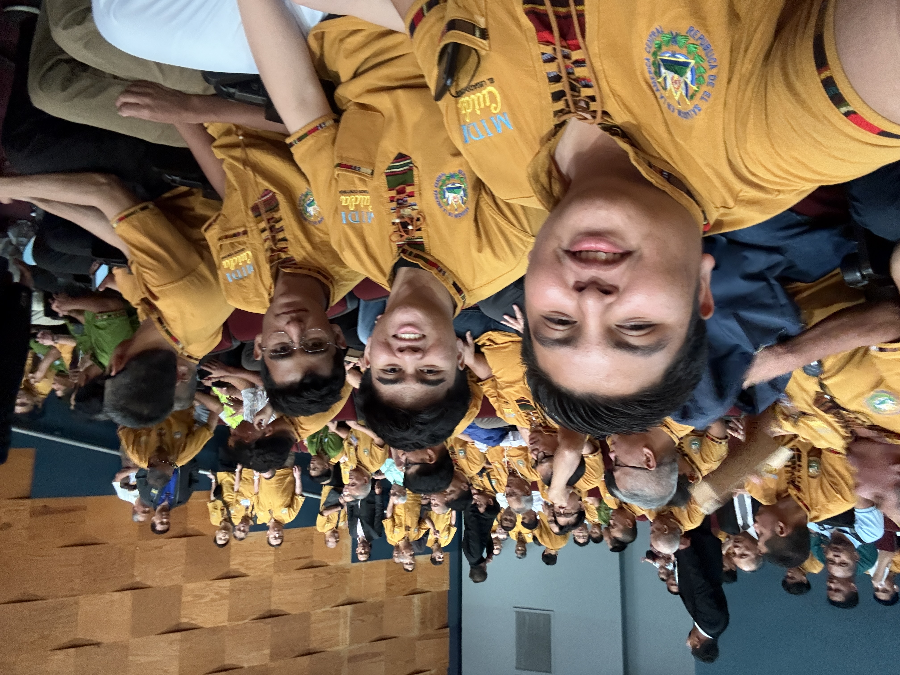
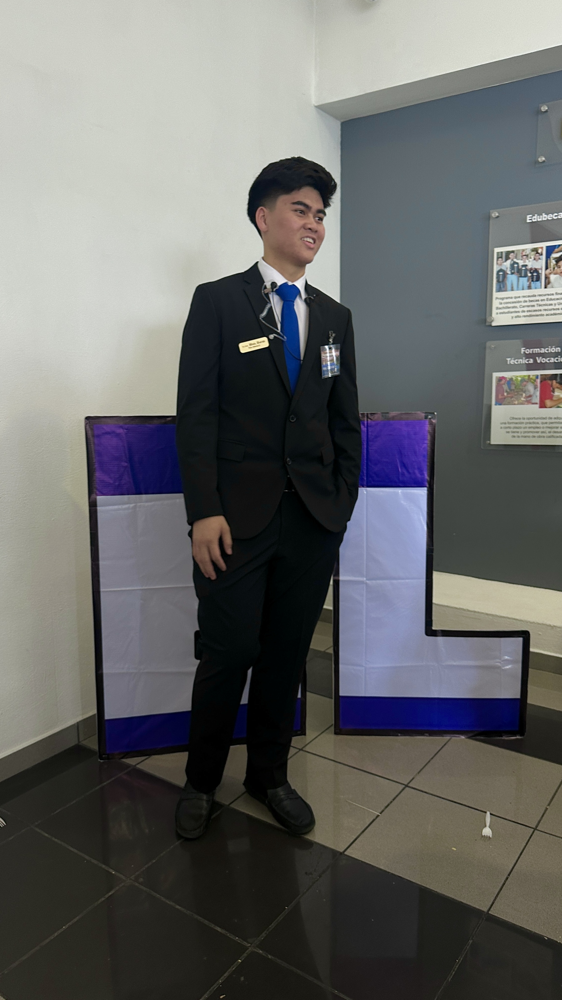
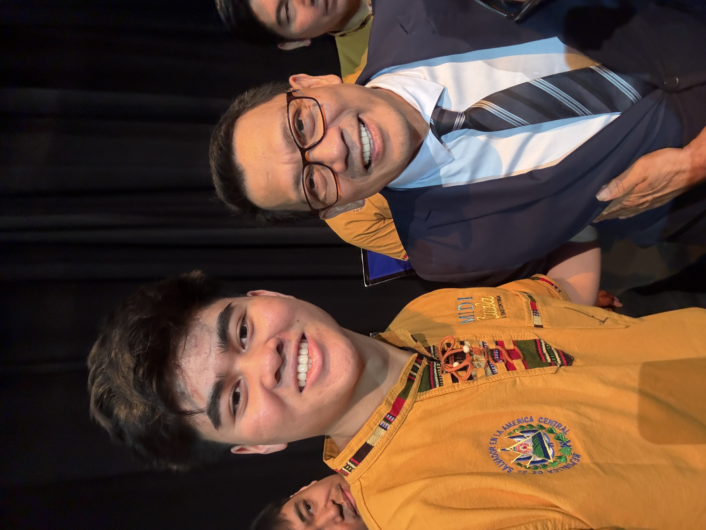
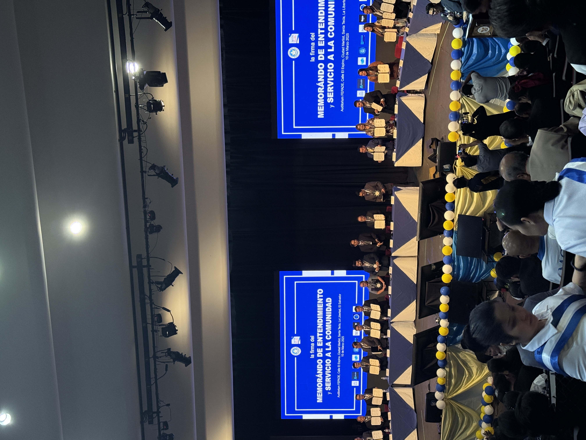
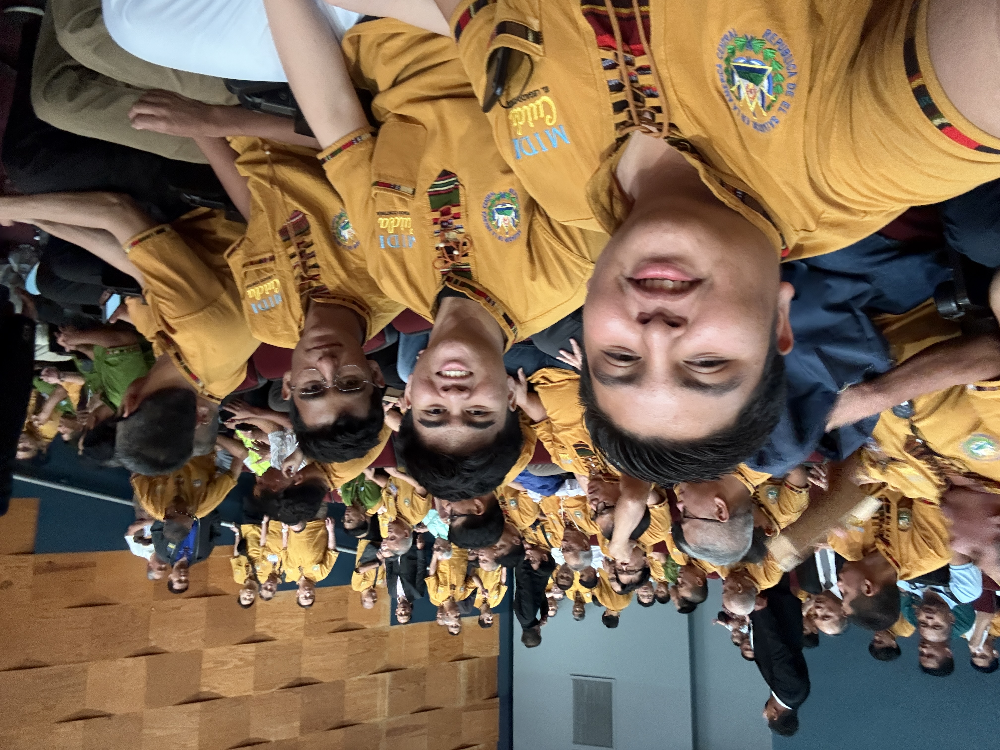
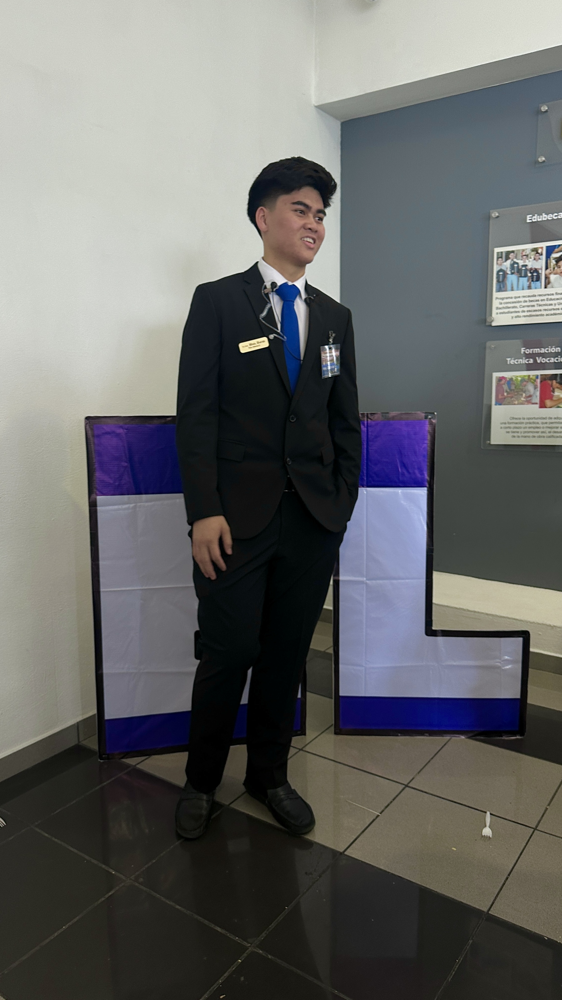
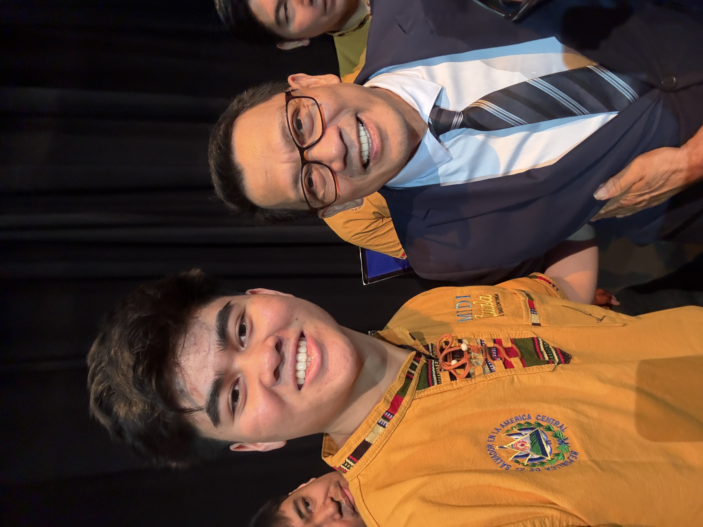
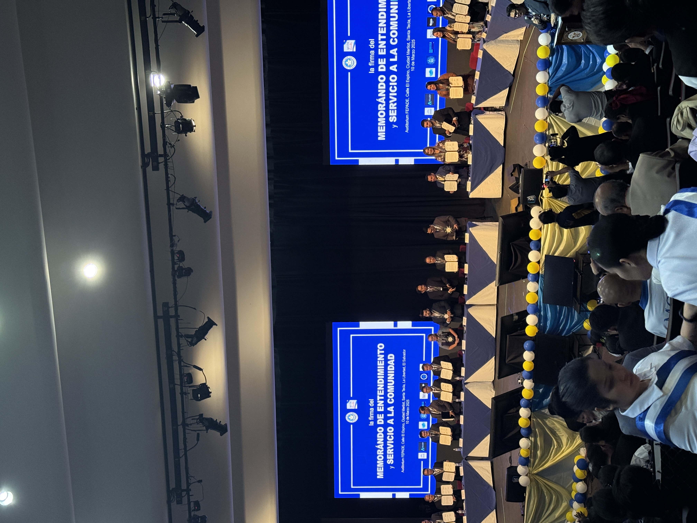
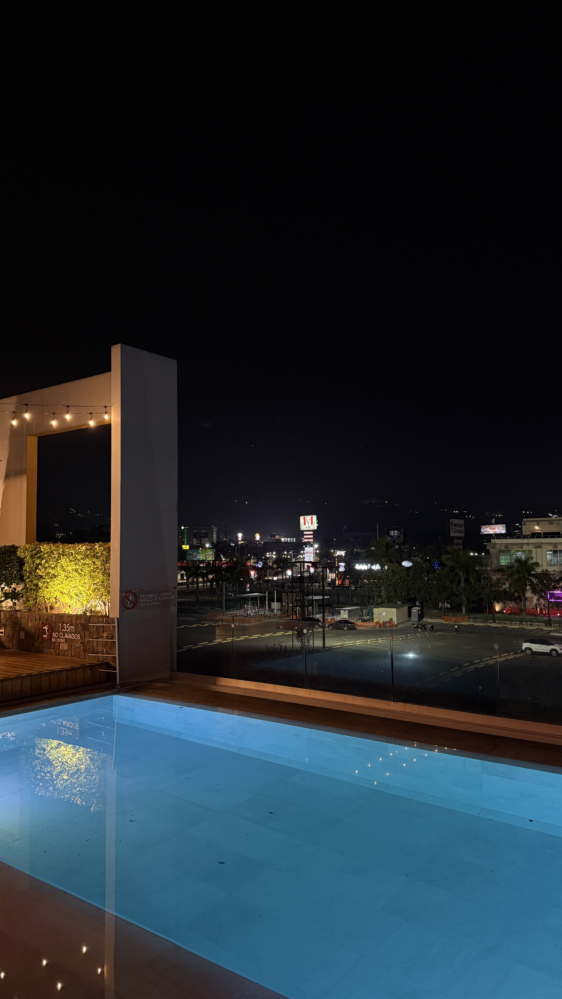
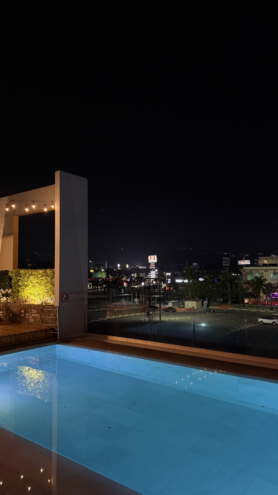

Replay your San Salvador, El Salvador Trip
1st international trip of the year. My back was in shambles on the flight there.
MIDI Cuida MOU
My Church did medical missions here. We got recognized as partners and held an event to commemorate with our overall preacher. I was part of the receptionist team.
Going around
Where we stayed there were so many malls. So we ended up exploring them.
National Library of El Salvador
After the event we visited their famous library. It was huge! There were so many floors and things to do. They even had video games!

 







 
